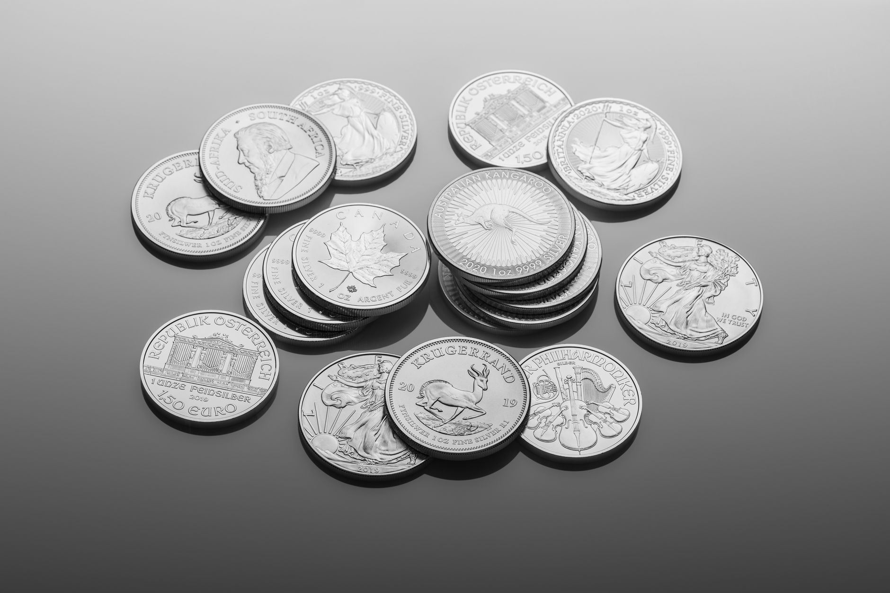
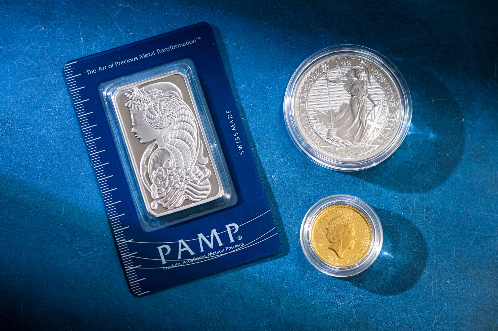

Silver rounds and silver coins both contain .999 fine silver. Both weigh one troy ounce. The difference is who made them, and that single factor changes your cost by as much as 15 to 20 percent. Rounds come from private mints and carry lower premiums. Coins come from government mints and carry legal tender status. Understanding this distinction is the fastest way to get more silver for your money.
Before comparing formats, it helps to understand why premiums exist in the first place. The post on silver premiums explained for beginners covers the full picture of how dealers calculate markup over spot price.
What Are Silver Rounds?
Silver rounds are disc-shaped pieces of silver produced by private mints. They are not legal tender. No government backs them, and they carry no face value. Private mints including Sunshine Minting, SilverTowne, and APMEX produce rounds in standard weights, typically 1 troy ounce at .999 fine silver purity.
Because private mints avoid the distribution overhead and coin program costs that government mints carry, rounds sell at lower premiums. A generic 1 oz silver round from a reputable private mint typically trades at 3 to 8 percent over spot price. That's the lowest markup you'll find for a one-ounce silver piece. You're buying silver, not a branded product.
Rounds have no serial numbers, no special design copyrights tied to government programs, and no collector premium built in. That keeps costs down. If your goal is pure silver accumulation, rounds are the most cost-efficient path.
What Are Silver Coins?
Government-minted silver coins are legal tender. The American Silver Eagle carries a $1 face value. The Canadian Silver Maple Leaf carries a 5 Canadian dollar face value. Those face values are largely symbolic -- a $1 coin contains over $30 worth of silver at most recent prices -- but the legal tender status matters for recognition and resale.
Government coins carry higher production costs. The US Mint controls American Silver Eagle supply, uses proprietary designs, and distributes only through authorized dealers. Those dealers add their own margin on top. The result: American Silver Eagles typically trade at 15 to 25 percent over spot. During supply crunches like 2021 and 2022, ASE premiums climbed above 50 percent over spot.
Canadian Silver Maple Leafs run at 10 to 18 percent premiums in normal market conditions. Britannias, Kangaroos, and other sovereign coins fall in similar ranges. Premium varies by dealer, volume, and current market demand.

Premium Comparison: Where the Real Cost Difference Lives
On a $30 spot price, the premium difference translates to real dollar gaps per ounce:
Buying 10 oz of silver, the premium gap costs you $30 to $60 more for ASEs versus generic rounds at a $30 spot price. At 100 oz, that gap reaches $300 to $600 for the same amount of actual silver. The metal inside is identical. The premium is purely about the product wrapping it.
If you want to see how to calculate this at the point of purchase before committing to a dealer, the guide on how to compare silver premiums across dealers walks through the math step by step.
Liquidity and Resale
Government coins have a recognition advantage. A dealer anywhere in the country immediately knows an American Silver Eagle. The design is universal, the weight is guaranteed by the US government, and there's no authentication question. That makes ASEs fast and frictionless to sell.
Generic silver rounds are less universally recognized. Some dealers hesitate on unfamiliar private mint designs, especially smaller local shops. You may face more questions at resale, and some buyers apply a small discount for unrecognized rounds.
That said, rounds from reputable large mints like Sunshine Minting and SilverTowne sell without issue at major dealers, coin shops, and online platforms including APMEX, JM Bullion, and SD Bullion. The liquidity gap is real but narrow for brand-name rounds. If you buy from a name-brand mint, resale is rarely a problem.
Numismatic Value
Government coins can carry numismatic (collector) value beyond the silver content. Proof American Silver Eagles, first-year issues, and low-mintage years trade at significant premiums. Some rare ASE varieties worth $30 in silver sell for $150 to $500 or more on the collector market.
Silver rounds have no collector value. Full stop. You're in or out purely on silver content. If your goal is building a reserve efficiently, that's fine. If you want the potential for collector upside on top of the silver value, rounds don't offer it.

Storage and Handling
Both formats store identically. A standard 1 oz silver round and a standard 1 oz silver coin share nearly identical dimensions. Both fit standard airtight capsules. Both stack in standard coin tubes (20 per tube). A fireproof safe or bank vault handles both the same way.
There's no storage advantage for either format. Your storage cost per ounce is the same whether you hold rounds or coins. Don't let storage complexity factor into this comparison -- it doesn't apply here.
Which Should You Buy?
The answer depends on your goal.
Building a physical reserve efficiently: Silver rounds are the better choice. Lower premiums mean more silver per dollar. If you're buying 20 oz, 50 oz, or 100 oz at a time, the premium savings compound into meaningful differences in total silver held.
Gifting or preserving recognizability: Government coins win here. An American Silver Eagle or Canadian Maple Leaf is universally understood. It's a better gift. It's easier to hand off without explanation.
Collecting: Government coins only. Rounds don't develop numismatic value.
Most buyers building a real reserve mix both. Rounds for the bulk of holdings, one or two rolls of ASEs for liquidity and gifting. That balance gives you cost efficiency for the core position and recognizable, fast-moving coins when you need them.
Read next: Silver Bars vs. Silver Coins: Which Is Better for Your Reserve?
Frequently Asked Questions
Sources
- APMEX -- Silver Round vs. Silver Coin pricing data, 2025-2026 dealer averages. apmex.com
- JM Bullion -- American Silver Eagle premium tracking, 2021-2026. jmbullion.com
- SD Bullion -- Generic silver round and Canadian Maple Leaf pricing, 2026. sdbullion.com
- US Mint -- American Silver Eagle specifications and authorized dealer program. usmint.gov